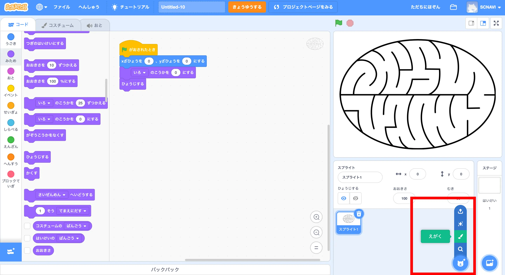

Scratchで3D迷路 ゲームを作 ろう！
もくじ
今回 つくるもの

リミックスして
迷路 をつくろう
スプライトをえがこう！
こんなふうに

プレイヤーをつくろう

つぎはプレイヤーを
このようにプログラミングしよう！
まずはこのようにプログラムしよう！
できたら、もしなら
こんなふうに
ゴールをつくろう
つぎはゴールを
ゴールに
ゴールの
プレイヤーに
視界 をつくろう
３D
それができたら

できたら
つぎはブロック
２つの
“がめんをさいびょうがせずにじっこうする”に
できたら、メッセージをうけとった
できたら”リスト”をつくるよ！
プレイヤーと
リストができたら、
このように２つの
このような
壁 をつくろう
“ペン”を
ペン
仕上 げをしよう
すべてのスプライトの
これで
もっと
①
②
などに